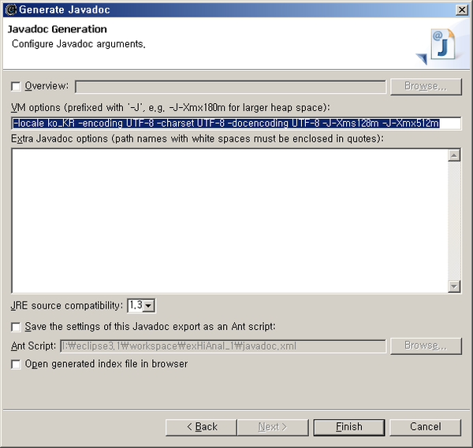

POSTS
javadoc 에서 한글이 깨지는 경우
(http://openframework.or.kr/blog/?p=177 에서 발췌)
utf-8로 인코딩된 java 파일의 javadoc을 만들 때는 javadoc.exe의 인수로
-locale ko_KR -encoding UTF-8 -charset UTF-8 -docencoding UTF-8
넘겨줌
<메모리가 모자랄 때>
-locale ko_KR -encoding UTF-8 -charset UTF-8 -docencoding UTF-8
-J-Xms128m -J-Xmx512m
이클립스 바로가기의 메모리와는 상관없다!
